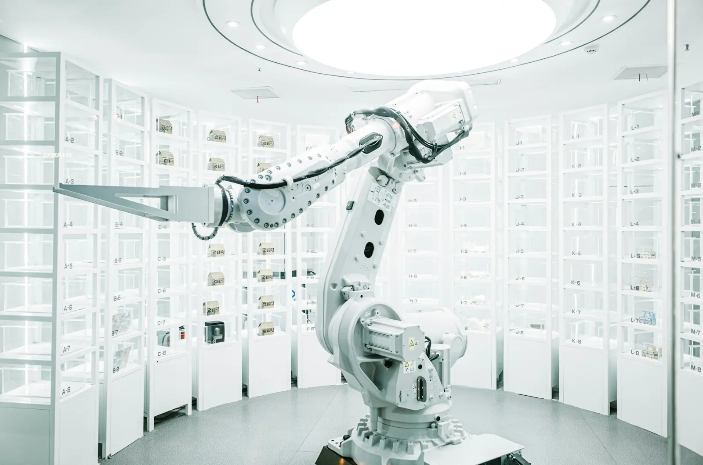

01 / 04Hiperautomatización y Rediseño de Procesos
Arquitecturas digitales que erradican las tareas manuales, de punta a punta.
Modelos operativos globales y escalables impulsados por hiperautomatización, analítica avanzada e Inteligencia Artificial — con el rigor de Lean Six Sigma detrás de cada iniciativa.
Entendemos la Transformación Digital no como la simple adopción de software, sino como el rediseño estratégico de la operación y la integración de Inteligencia Artificial para crear organizaciones ágiles, eficientes y preparadas para el mercado global.
Desde Guadalajara, Jalisco, somos una firma especializada en la arquitectura, optimización y automatización inteligente de modelos operativos globales, con una Oficina de Gestión de Proyectos (PMO) que lidera iniciativas de cualquier naturaleza.
Nuestra metodología conecta la tecnología con los objetivos de negocio a través de cuatro pilares fundamentales.

01 / 04Arquitecturas digitales que erradican las tareas manuales, de punta a punta.
Tableros dinámicos con control total e indicadores clave en tiempo real.
Equipos que adoptan la IA como co-piloto, sin perder continuidad.
Modelos modernos para crecer de manera sostenible y sin fricciones.
Fusionamos Lean 6 Sigma con las tecnologías más avanzadas en Inteligencia Artificial y automatización. El resultado: una infraestructura empresarial sólida, sin fricciones y lista para escalar en mercados internacionales.
Entendemos tu operación, objetivos y puntos de fricción.
Levantamos datos e indicadores del estado actual.
Identificamos causas raíz y oportunidades de automatización.
Rediseñamos procesos e implementamos tecnología e IA.
Gobernanza, tableros y adopción para sostener los resultados.
Transformación integral de procesos backoffice y migración a Oberlens, nuestro sistema propio para ópticas, que automatiza de punta a punta citas, ventas, laboratorio, facturación y gastos.
Visitar desnublaopticas.mxLo que más nos preguntan sobre automatización, capacidad de los equipos, la jornada de 40 horas y Oberlens.
Oberon es una consultoría de Zapopan, en la zona metropolitana de Guadalajara, que rediseña y automatiza la operación de las empresas con Inteligencia Artificial y Lean Six Sigma. Trabaja en cuatro frentes: hiperautomatización de procesos, analítica de datos con Power BI, gestión del cambio y adopción de IA, y gobernanza con una oficina de proyectos (PMO). Su equipo tiene más de 10 años de experiencia en empresas transnacionales de México, EE. UU. y Brasil.
La hiperautomatización combina automatización low-code (como Power Automate), lectura inteligente de documentos e Inteligencia Artificial para que un proceso completo funcione solo, de principio a fin. En una oficina, lo más común es automatizar cuentas por pagar (leer facturas XML y PDF y registrarlas en el ERP), conciliaciones bancarias, reportes periódicos y la clasificación de correos. En Oberon medimos el proceso antes de automatizarlo.
Lean Six Sigma es una metodología de mejora que elimina desperdicios (Lean) y reduce errores y variación (Six Sigma), siempre midiendo antes y después. En una oficina sirve, por ejemplo, para acortar el cierre de mes, reducir errores de facturación o entregar más rápido a los clientes. Oberon trabaja con el ciclo DMAIC (Definir, Medir, Analizar, Mejorar, Controlar), con un Black Belt al frente de cada entregable.
Una PMO (Oficina de Gestión de Proyectos) planea y controla el alcance, el tiempo, el costo y la calidad de un proyecto. Conviene contratarla cuando hay un proyecto clave y nadie puede dirigirlo de tiempo completo, como implementar un ERP o abrir una sucursal. Oberon ofrece su PMO como servicio por separado, para proyectos tecnológicos o de otro tipo, con seguimiento semanal con la dirección.
La adopción se logra capacitando a cada puesto, poniendo reglas claras de uso y acompañando al equipo en las primeras semanas; instalar la herramienta no basta. Oberon da talleres de IA con casos reales del equipo usando ChatGPT o Copilot, define reglas para usarla con datos de la empresa y forma «campeones digitales» en cada área, que aprenden a automatizar sus propias tareas con herramientas low-code.
Para saberlo hay que comparar la carga de trabajo medida con las horas que el equipo realmente tiene disponibles, no con la jornada. Esas horas ya descuentan comida, descansos, feriados y vacaciones. Si la carga pasa del 100 % de esa capacidad, el equipo está sobresaturado. El Diagnóstico de Capacidad Operativa de Oberon hace la cuenta gratis, por semana y por día, porque el promedio del año esconde los picos.
Es una herramienta gratuita en oberontd.com/diagnostico. Calcula la capacidad real de un equipo, qué tan saturado está, sus picos por semana y por día, y qué parte del trabajo se puede automatizar. Toma unos 10 minutos, no pide registro y está en español, inglés y portugués. Si quieres, un consultor de Oberon te envía un reporte en PDF con recomendaciones en un máximo de 24 horas.
La capacidad instalada son las horas que un equipo realmente puede dedicar al trabajo en un periodo. Se calcula así: horas de la jornada menos comida y descansos, por los días disponibles (días hábiles menos feriados y vacaciones), por el número de personas. Por ejemplo, con 7.5 horas efectivas al día y 241 días disponibles, cada persona tiene unas 1,807 horas al año.
R&R significa repetibilidad y reproducibilidad. Un tiempo es confiable cuando la misma persona tarda más o menos lo mismo cada vez, y cuando personas distintas también tardan parecido entre sí. Viene del control de calidad en manufactura. En una oficina se aplica tomando varias mediciones con distintas personas, horarios y días; si la variación pasa del 25 %, conviene medir más o revisar si todos hacen la actividad igual.
Si la actividad se repite mucho, conviene tomar al menos 10 mediciones; con menos de 5, el promedio todavía no es confiable. Las mediciones deben repartirse entre distintas personas, horarios (mañana y tarde) y días del mes (inicio, mitad y cierre), y el cronómetro se pausa mientras se espera algo. Si la variación pasa del 25 %, el proceso no está estandarizado.
La jornada de 40 horas llega poco a poco. La reforma a la Ley Federal del Trabajo se publicó en el Diario Oficial el 1 de mayo de 2026, y la jornada máxima baja de 48 horas por semana a 46 en 2027, 44 en 2028, 42 en 2029 y 40 en 2030. En ese mismo periodo, el tope de horas extra sube de 9 a 12 por semana.
Desde el 1 de enero de 2027, todas las empresas en México deberán registrar de forma electrónica la hora de entrada y de salida de cada persona, según el artículo 132, fracción XXXIV, de la Ley Federal del Trabajo reformada. La Secretaría del Trabajo publicará las reglas para hacerlo. No llevar el registro puede costar multas de 250 a 5,000 UMA, entre 29 mil y 586 mil pesos aproximadamente.
Con el mismo trabajo, la jornada de 40 horas reduce cerca de 13 % las horas efectivas de cada persona. En un ejemplo calculado por Oberon, un equipo de 5 personas que hoy trabaja 45 horas y usa el 92 % de su capacidad pasaría al 106 % en 2030: quedaría sobresaturado sin haber contratado a nadie. Cada recorte anual de la reforma quita alrededor de 4 % de capacidad.
Primero mide la carga real de tu equipo contra sus horas disponibles, por semana y por día. Después reparte mejor la carga, estandariza los procesos cuyos tiempos cambian mucho y automatiza lo repetitivo, como captura de datos, conciliaciones y reportes. Así sabrás con datos si de verdad hace falta contratar o si sobran tareas. Planea el cambio año por año, de 46 horas en 2027 a 40 en 2030.
Resumen informativo con base en la reforma publicada; no constituye asesoría legal.
Oberlens es un sistema para ópticas creado por Oberon en Guadalajara. Reúne en un solo lugar las consultas clínicas y el expediente, la receta en PDF, la agenda de citas en línea, el punto de venta, el laboratorio, el inventario y las finanzas de cada sucursal. Funciona en computadora y en celular, y se puede probar gratis 30 días en oberlens.com. Nació del proyecto con Desnubla Ópticas, que hoy lo usa.
Un buen sistema para una óptica con varias sucursales debe llevar la receta del optometrista al mostrador y al laboratorio, y mostrar en tiempo real las citas, ventas, inventario y dinero de cada sucursal. Oberlens, hecho en Guadalajara para ópticas mexicanas, incluye traspasos de inventario entre sucursales, metas de venta por sucursal, gastos con facturas y recordatorios automáticos de citas. Tiene prueba gratis de 30 días.
La consultoría de Oberon rediseña y automatiza la operación de cualquier empresa, a la medida. Oberlens es un producto listo para usar, solo para ópticas, con su propio sitio, precios y soporte en oberlens.com. Oberlens nació de un proyecto de consultoría con Desnubla Ópticas. Si tu proceso no cabe en un software genérico, Oberon puede construir un sistema a la medida sobre la misma base.
El primer paso es agendar una llamada sin costo con el equipo de Oberon en oberontd.com/contacto. En ella conocemos tu proceso o negocio, aclaramos el alcance de lo que necesitas y te presentamos nuestra propuesta de valor. Si prefieres empezar por tu cuenta, el Diagnóstico de Capacidad Operativa gratuito mide en unos 10 minutos la carga de tu equipo.
La primera llamada con el equipo de Oberon no tiene costo: en ella conocemos tu proceso o negocio, aclaramos el alcance de lo que necesitas y te presentamos nuestra propuesta de valor. El costo de una auditoría de procesos o de un proyecto de automatización depende del alcance, de los sistemas que hay que conectar y del volumen de operaciones, y se explica directamente en ese primer contacto.
Una auditoría de procesos es una revisión a fondo de cómo funciona hoy tu operación: se miden tiempos y volúmenes para saber qué automatizar, qué medir y cómo crecer antes de invertir en tecnología. En Oberon es un servicio con costo que entrega las oportunidades de automatización e IA y una ruta de transformación a tu medida. Antes, una llamada sin costo define si la necesitas y su alcance.
Oberon Consultores en Transformación Digital e IA tiene su sede en Zapopan, Jalisco, en la zona metropolitana de Guadalajara, México, y atiende a empresas de México y de otros países, en persona o a distancia. Su equipo ha dirigido proyectos en México, Estados Unidos y Brasil. Puedes escribir a lurias@oberontd.com, llamar al 33-3015-3089 o agendar una llamada sin costo con su equipo.
Transforma la complejidad en autonomía. El primer paso es una llamada sin costo con nuestro equipo: conocemos tu proceso o negocio y te mostramos nuestra propuesta de valor.